vgl. Heilmann S. 451
vgl. Resig S. 59
Wenn Sie in die JavaScript-Entwicklung einsteigen, sollte Sie sich mit einigen Werkzeugen vertraut machen, die Ihnen das Schreiben eines Scriptes vereinfachen. Um zu einem funktionsfähigen Script kommen, um Fehler zu finden und um Script-Abläufe zu verstehen, gibt es einige bewährte Arbeitsmethoden und Fertigkeiten.
JavaScripte können Sie mit ganz unterschiedlichen Programmen und Hilfsmitteln entwickeln und jeder Webautor hat unterschiedliche Bedürfnisse und Gewohnheiten. Sobald Sie einige Erfahrung gesammelt haben, sollten Sie sich umschauen, welche Arbeitsweise Ihnen am besten zusagt. Für den Anfang sei hier aber eine einseitige und parteiische Empfehlung ausgesprochen.
Wenn Sie browserübergreifende JavaScripte für das öffentliche Web programmieren, so sollten Sie Ihre Scripte zunächst mit dem Browser Mozilla Firefox testen und sie mit dessen Hilfe fortentwickeln. Dieser Browser ist weit verbreitet, läuft auf allen relevanten Plattformen und ist einer der Ziel-Browser, auf dem Ihre Scripte auf jeden Fall funktionieren sollten. Firefox verfügt über ausgezeichnete JavaScript-Fähigkeiten und gibt präzise und hilfreiche JavaScript-Fehlermeldungen. Sie können Firefox unter getfirefox.com herunterladen.
Eine weitere entscheidende Hilfe stellt das Firefox-Zusatzprogramm Firebug dar. Firebug ist nicht nur ein mächtiges JavaScript-Werkzeug, sondern hilft auch enorm bei der HTML- und CSS-Entwicklung - insbesondere durch den sogenannten DOM-Inspektor, mit dem Sie den Elementbaum des HTML-Dokuments sowie die zugehörigen JavaScript- und CSS-Eigenschaften ansehen können. Nachdem Sie Firefox installiert haben, können Sie das Firebug-Addon über getfirebug.com oder die Firefox-Addon-Datenbank installieren.
Firebug gibt Lernenden einen wertvollen Einblick in das DOM, veranschaulicht den Aufbau von JavaScript-Objekten und macht die Zusammenarbeit zwischen HTML, CSS und JavaScript verständlich. Seien Sie neugierig und spielen Sie mit Firebug herum - es kann ihr Verständnis der Webtechniken und insbesondere dem DOM Scripting nur verbessern.
Eine weitere Voraussetzung für die JavaScript-Programmierung ist natürlich ein Texteditor, mit dem Sie die JavaScripte schreiben. Auch in puncto Editoren haben Sie zwischen tausenden eine Auswahl. Für den Anfang brauchen Sie keinen Editor mit besonderen Fähigkeiten. Er sollte jedoch Syntax-Highlighting für JavaScript-Code sowie die Anzeige von Zeilen- und Spaltennummern beherrschen. Denn diese Features erweisen sich direkt als hilfreich. Ein möglicher einfacher Editor für Windows ist Notepad++, weitere finden Sie im Linkverzeichnis.
Mit diesem Dreiergespann bestehend aus einem komfortablen Texteditor, einem hochentwickelten Browser und einem Analyse-Werkzeug für JavaScripte können sie gut gewappnet in die Programmierung einsteigen.
Der erste Referenzpunkt beim Testen von Scripten in einem Browser ist die JavaScript-Konsole des Browsers. Darin werden Fehler aufgeführt, die bei der JavaScript-Ausführung auftraten. Eine solche Fehlermeldung besteht üblicherweise aus einer Fehlerbeschreibung, der Script-Adresse sowie der Zeilennummer.
In der JavaScript-Konsole finden sich in erster Linie Ausnahmefehler (englisch exceptions). Wenn diese auftreten, wird die Ausführung des Scriptes abgebrochen. Ein Ausnahmefehler tritt beispielsweise auf, wenn Sie auf eine nicht existente Variable zugreifen, eine nicht existente Methode aufrufen oder eine Objekteigenschaft ansprechen, obwohl es sich beim jeweiligen Wert nicht um ein Objekt handelt.
Die Browser unterscheiden sich darin, wie sie diese Fehlermeldungen darstellen und wie informativ diese sind. Die verständlichsten und präzisesten Fehlermeldungen liefert üblicherweise der Firefox-Browser.
Im Firefox können Sie die Meldungen über das Menü Extras → Fehlerkonsole erreichen:
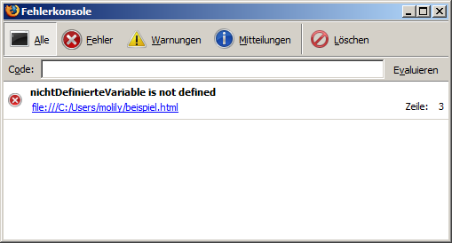
Der obige Screenshot zeigt eine beispielhafte Fehlermeldung, die auftritt, wenn auf eine nicht definierte Variable zugegriffen wird. Der Code, der diesen Fehler absichtlich ausgelöst hat, lautet window.alert(nichtDefinierteVariable);. Wie der Fehlerkonsole zu entnehmen ist, steht dieser Code in der Zeile 3 des HTML-Dokuments mit der Adresse file:///C:/Users/molily/beispiel.html.
In der Fehlerkonsole von Firefox werden nicht nur JavaScript-Exceptions angezeit, sondern auch andere Meldungen und Warnungen, die Firefox beim Verarbeiten von HTML- und CSS-Code ausgibt. Als Webentwickler sollten Sie daher immer ein Auge auf diese Fehlerkonsole haben.
Mithilfe des empfohlenen Firefox-Zusatz Firebug ist der Zugriff auf die Fehlerkonsole einfacher. Wenn bei der Ausführung eines Scriptes ein Ausnahmefehler auftritt, dann erscheint rechts unten in der Statusleiste ein rotes Fehlersymbol mit der Anzahl der Fehler. Wenn Sie darauf klicken, klappt Firebug am unteren Fensterrand auf und zeigt die Konsole samt Fehlermeldungen:
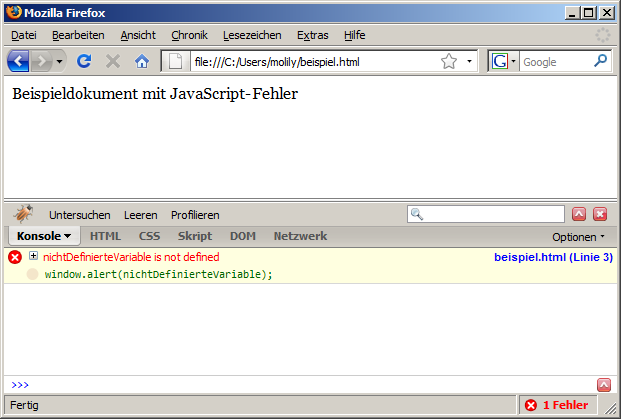
Firebug zeigt nicht nur die aus der herkömmlichen Firefox-Konsole bekannten Informationen an, sondern zeigt sogar die JavaScript-Anweisung, die den Fehler ausgelöst hat. Außerdem führt ein Klick auf den grünen Code oder den blauen Zeilenverweis in den »Script«-Tab von Firebug. Darin wird der gesamte JavaScript-Code dargestellt und direkt zu der Zeile gesprungen, die den Fehler ausgelöst hat:
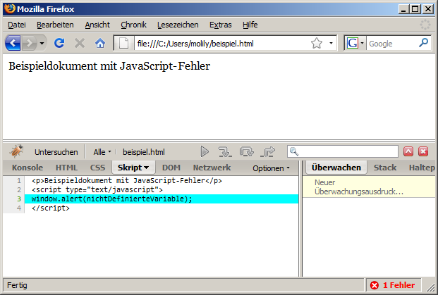
Nach Möglichkeiten sollten Sie mit den JavaScript-Konsolen von Firefox bzw. dem Firebug-Zusatz arbeiten. Dennoch soll nicht verschwiegen werden, wie Sie in den anderen relevanten Browsern an die Fehlermeldungen kommen.
Der Internet Explorer (Stand: Version 7) kennt keine vergleichbare Konsole, in der alle Fehlermeldungen mitgeloggt werden und die ein Webautor komfortabel abrufen kann. Stattdessen erzeugen Ausnahmefehler Meldungsfenster direkt im Browser. Beim obigen Beispiel sieht das etwa so aus:
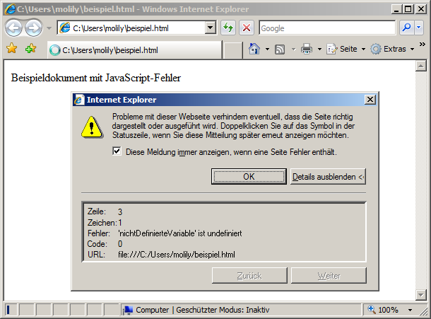
Allerdings springt dieses Fenster nicht immer auf, wenn auf irgendeiner Website ein JavaScript-Fehler passiert. Das würde beim normalen Web-Browsing dazu führen, dass fast auf jeder Seite die ein oder andere Fehlermeldung angezeigt wird. Auf Dauer würden diese Fenster den Websurfer nerven, deshalb ist ihre Anzeige standardmäßig deaktiviert.
Um bei der JavaScript-Entwicklung im Internet Explorer die Fehlermeldungen zu Gesicht zu bekommen, ist eine entsprechende Einstellung nötig. Klicken Sie auf die Schaltfläche Extras und wählen Internetoptionen. Unter der Registerkarte Erweitert finden Sie eine lange Liste von Einstellungen. Unterhalb von Browsen finden Sie die Einstellung Skriptfehler anzeigen. Diese Checkbox sollte wie auf dem folgenden Screenshot aktiviert sein (Häkchen setzen):
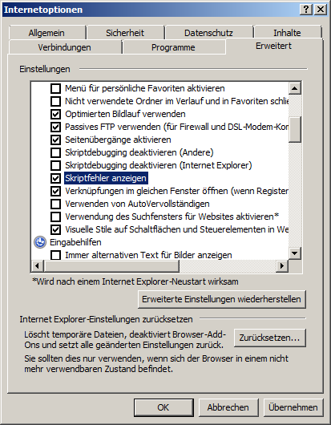
Sie können diese Einstellung jederzeit wieder rückgängig machen, indem Sie in einem Meldungsfenster Checkbox »Diese Meldung immer anzeigen, wenn eine Seite Fehler enthält.« deaktivieren.
Die Fehlermeldungen des Internet Explorers, insbesonderen in älteren Versionen, sind weniger präzise und oft unverständlich und verwirrend. In manchen Fällen wird die Zeilennummer nicht korrekt angegeben und bei ausgelagerten JavaScript-Dateien die tatsächliche Script-Adresse nicht angegeben, nur die Adresse des einbindenden HTML-Dokuments. Ein komfortables Debugging von Scripten im Internet Explorer 7 ist daher ohne Zusätze schwer möglich. Dennoch können Sie auch mit den unzureichenden Fehlermeldungen mit der Zeit ein Gefühl dafür bekommen, wie Sie die Fehlerquelle in Ihrem Script lokalisieren und die Fehlerursache beheben. Erst der Internet Explorer 8 wird eine komfortable Fehlerkonsole enthalten, die Firebug nachempfunden ist.
Im Opera-Browser erreichen Sie die Fehlerkonsole über den Menüeintrag Extras → Weiteres → Fehlerkonsole. Die Fehlerbeschreibungen sind im Allgemeinen weniger verständlich als im Firefox, aber zeigen zumindest genau die Stelle im Code an, die den Fehler ausgelöst hat:
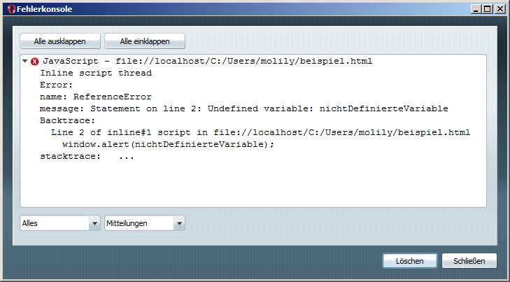
Ähnlich wie beim Firefox handelt es sich um eine Mehrzweck-Konsole, in der sich u.a. auch HTML- und CSS-Warnungen finden. Eine Filterung nach JavaScript-Fehlern ist jedoch möglich.
Mittlerweile verfügt Opera über einen Firebug-ähnlichen Zusatz namens Dragonfly, der über das Menü Extras → Weiteres → Entwicklerwerkzeuge aktiviert werden kann. Dessen Fehlerkonsole bietet derzeit aber keinen Mehrwert gegenüber der herkömmlichen, die Meldungen sind identisch - allerdings kann sie nicht nur in einem gesonderten Fenster, sondern am unteren Fensterrand angezeigt werden:
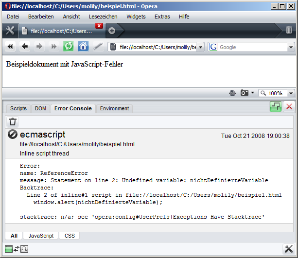
Um im Safari an die Fehlermeldungen zu kommen, müssen Sie zunächst das sogenannte Developer-Menü aktivieren, denn darüber lässt sich die JavaScript-Fehlerkonsole öffnen. Dazu wählen Sie im Menü Bearbeiten den Eintrag Einstellungen. Unter der Registerkarte Erweitert aktivieren Sie die Checkbox »Menü "Developer" in der Menüleiste einblenden«:
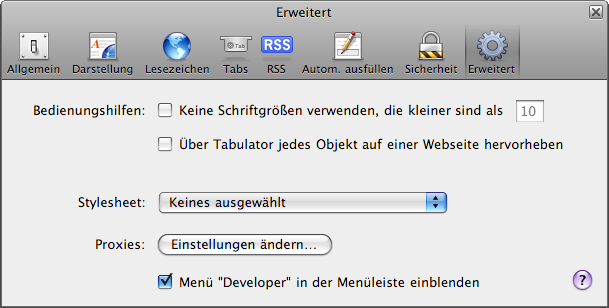
Daraufhin erscheint im Safari-Hauptfenster das Menü Developer, in dem Sie den Eintrag Fehlerkonsole einblenden finden werden. Der Beispielcode erzeugt darin folgende Fehlermeldung:
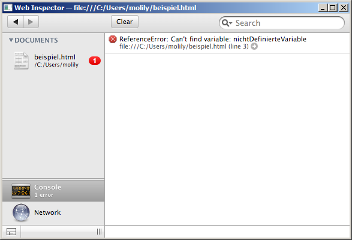
Mit einem Klick auf den Pfeil können Sie in die Quelltext-Ansicht springen, um zur Code-Zeile zu gelangen, die den Fehler ausgelöst hat.
Hilfe, mein JavaScript funktioniert nicht! - Keine Panik. Wenn Sie bei der JavaScript-Programmierung ein paar Faustregeln befolgen, kommen Sie schnell voran und finden die Ursache.
Bei der JavaScript-Entwicklung sollten Sie sich eine methodische Herangehensweise angewöhnen: Werden Sie sich klar darüber, was sie genau vorhaben und wie, das heißt mit welchen Einzelschritten Sie das erreichen wollen. Wenn Sie sich diesen Programmablauf überlegt haben, recherchieren Sie die dazu nötigen JavaScript-Techniken. Suchen Sie in einer Objektreferenz die Objekte heraus, mit denen Sie arbeiten wollen. Lesen Sie die Beschreibungen aufmerksam durch, sodass sie die Objekte korrekt verwenden können. Beachten Sie unter anderem den Typ von Eigenschaften und die Parameter, die Methoden entgegennehmen.
Wenn ein Script nicht wie erwartet funktioniert, sollten Sie zunächst in der Fehlerkonsole des Browsers schauen, ob in ihrem Script Fehler auftraten und der Browser die Ausführung deshalb gestoppt hat. Die Fehlerkonsole liefert in der Regel die Nummer der Codezeile in Ihrem Script, in der der Fehler aufgetreten ist. Die letztliche Ursache des Fehlers kann, muss aber nicht genau in dieser Zeile liegen! Die Ursache kann genauso eine Anweisung in einer anderen Zeile im Script sein, die vorher ausgeführt wurde, sodass die Voraussetzungen für die spätere Anweisung nicht gegeben sind.
Um Fehlern auf die Spur zu kommen, gehen Sie ihr JavaScript-Programm Schritt für Schritt durch und notieren nach jeder relevanten Anweisung eine Kontrollausgabe. Dies geht am einfachsten mit der browserübergreifenden Methode window.alert, die ein Meldungsfenster erzeugt. Ein Beispiel:
var element = document.getElementById("navigation");
window.alert("Navigationselement: " + element);
var textknoten = document.createTextNode("Hallo!");
window.alert("Neuer Textknoten: " + textknoten);
element.appendChild(textknoten);
window.alert("Textknoten wurde angehängt.");
Wenn ein Fehler in Ihrem Script auftritt, dann bricht der Browser die Script-Ausführung ab, sodass die darauffolgende Kontrollausgabe nicht mehr ausgeführt wird. Somit können Sie einerseits den Fehler lokalisieren und andererseits gibt Ihnen die letzte Kontrollausgabe vor dem Abbruch eventuell Hinweise auf die Fehlerursache.
Um Fehler auf diese Weise eingrenzen zu können, sollten Sie die Anweisungen zwischen den Kontrollausgaben möglichst einfach halten - zumindest solange ihr Script noch in der Entwicklungsphase ist. Die folgende Anweisung ist zusammengesetzt und kann an gleich mehreren Stellen zu einem Programmabbruch führen:
document.getElementsByTagName("h1")[0].style.color = "red";
Wenn in dieser Zeile ein JavaScript-Fehler auftritt, dann sollten Sie die Anweisung in ihre Teile aufspalten und Kontrollausgaben einfügen:
window.alert("Suche alle Überschriften im Dokument...");
var überschriftenListe = document.getElementsByTagName("h1");
window.alert("Anzahl der gefundenen h1-Überschriften: " + überschriftenListe.length);
var ersteÜberschrift = überschriftenListe[0];
window.alert("Erste h1-Überschrift: " + ersteÜberschrift);
window.alert("Setze Farbe der Überschrift...");
ersteÜberschrift.style.color = "red";
window.alert("Farbe gesetzt.");
Dieses Beispiel ist übertrieben, soll aber die Möglichkeiten von Kontrollausgaben veranschaulichen. Der Vorteil von window.alert ist, dass der Browser die Ausführung des Scriptes solange anhält, wie das Meldungsfenster geöffnet ist. Auf die Weise können Sie einem Script, das sonst ganz schnell ausgeführt wird, bei der Arbeit zuschauen und Fehler erkennen.
Der Nachteil von Kontrollausgaben mit window.alert ist, dass es JavaScript-Objekte in Strings umwandeln muss, um sie auszugeben. (Intern wird die Objektmethode toString aufgerufen.) Der String, der dabei herauskommt, gibt Ihnen nicht immer Aufschluss darüber, ob es sich um das erwartete Objekt handelt. Nur in einigen Browsern ist nachvollziehbar, um was für ein Objekt es sich handelt. Bei bei komplexen Objekten wie Arrays oder DOM-Knoten ist dies aber gewöhnungsbedürftig - mit der Zeit lernen Sie, wie sie solche Knoten am besten in Kontrollausgaben ansprechen.
Vielseitiger als Ausgaben mittels window.alert ist die Nutzung der JavaScript-Konsole von Firebug. Über das globale Objekt window.console bietet Firebug verschiedene Methoden an, mit denen Sie Statusmeldungen in die Firebug-eigene Konsole schreiben können. In der Konsole haben Sie dann ein Log aller Meldungen Ihres Scriptes.
Das obige Beispiel könnte für Firebug mithilfe der Methode console.debug folgendermaßen umgesetzt werden:
var überschriftenListe = document.getElementsByTagName("h1");
console.debug("Gefundene h1-Überschriften:", überschriftenListe);
var ersteÜberschrift = überschriftenListe[0];
console.debug("Erste h1-Überschrift:", ersteÜberschrift);
console.debug("Setze nun die Farbe der Überschrift...");
ersteÜberschrift.style.color = "red";
console.debug("Farbe gesetzt. Zur Kontrolle:", ersteÜberschrift.style.color);
Firebug stellt auch komplexe Objekte sinnfällig da. Die Ausgaben in der Konsole sind interaktiv, d.h. sie können ein dort ausgegebenes Objekt anklicken und sich dessen Eigenschaften auflisten lassen.
Das Objekt console bietet viele weitere Methoden, um Meldungen in die Konsole zu schreiben. Diese können Sie der besagten Dokumentation entnehmen.
Für den Anfang sollten Ihnen aber die Methoden console.debug und console.log ausreichen.
ToDo von: mschaefer
Auf diese Weise können Sie akribische Ablaufprotokolle Ihrer Scripte anlegen und haben die Objekte, mit denen Sie arbeiten, direkt im Blick. Dies macht Firebug zu einem unverzichtbaren Werkzeug. Mittlerweile bieten auch Entwicklerwerkzeuge für andere Browser ein console-Objekt mit den besagten Methoden an. Damit entsteht ein Quasi-Standard, mit dem hoffentlich irgendwann eine browserübergreifende JavaScript-Fehlersuche ermöglicht.
Beachten Sie jedoch, dass Sie diese Methodenaufrufe nur während der Entwicklung ihrer Scripte nutzen können und am Ende wieder entfernen sollten - denn bei Ihren Webseiten-Besuchern wird das console-Objekt üblicherweise nicht zur Verfügung stehen. Ein Aufruf würde daher einen Fehler erzeugen und das Script abbrechen.
Beim Einlesen eines HTML-Dokuments erzeugt der Browser aus dem HTML-Code eine Baumstruktur aus Elementen - diese Vorgang nennt sich Parsing. Die auf HTML aufbauenden Webtechniken CSS und JavaScript operieren auf dieser Grundlage. Den JavaScript-Zugriff auf diese interne Baumstruktur regelt das .
Zum Auslesen und Verändern des Dokuments bewegt sich ein Script im DOM-Baum. Um den Elementenbaum des aktuellen Dokuments zu veranschaulichen, bieten verschiedene Browser sogenannte DOM-Inspektoren an. Diese bilden die Knotenstruktur ab, die sie aus dem Dokument generiert haben, und erlauben eine Navigation darin. Sie können in der Baumdarstellung einen Elementknoten anklicken, um dessen JavaScript-Eigenschaften und -Methoden sowie die geltenden CSS-Formatierungen zu sehen.
Eine weitere Möglichkeit, Informationen zu einem Element abzurufen, nennt sich Element untersuchen oder ähnlich. Dabei können Sie einen beliebigen Bereich im Dokument anklicken und im DOM-Inspektor wird automatisch das zugehörige Element fokussiert und dessen Informationen angezeigt.
Nehmen wir folgendes Beispieldokument und schauen uns an, wie die verschiedenen DOM-Inspektoren den Elementenbaum wiedergeben:
<!DOCTYPE HTML PUBLIC "-//W3C//DTD HTML 4.01//EN" "http://www.w3.org/TR/html4/strict.dtd"> <html> <head> <meta htttp-equiv="Content-Type" content="text/html; charset=UTF-8"> <title>Document Object Model</title> </head> <body> <h1>Document Object Model</h1> <p>(aus: <a href="http://de.wikipedia.org/wiki/Document_Object_Model">Wikipedia, der freien Enzyklopädie</a>.)</p> <blockquote cite="http://de.wikipedia.org/wiki/Document_Object_Model"> <p>Das Document Object Model (DOM) ist eine Programmierschnittstelle (API) für den Zugriff auf HTML- oder XML-Dokumente. Sie wird vom World Wide Web Consortium definiert. <p>...</p> </blockquote> </body> </html>
Ältere Firefox-Versionen besitzen einen eingebauten, aber wenig komfortablen DOM-Inspektor. Ab Version 3 ist der DOM-Inspektor nicht mehr enthalten. Er kann zwar nachinstalliert werden, aber Sie sollten direkt auf das Firebug-Addon umsteigen, der dieselbe Funktionalität bietet.
Zum DOM-Inspektor von Firebug gelangen Sie, indem Sie die Firebug-Leiste am unteren Fensterrand durch einen Klick auf das Käfer-Symbol aufklappen. Anschließend wählen Sie den Tab HTML. Auf der linken Seite findet sich der interaktive Elementbaum. Sie können die Verschachtelungen über die Plus-Symbole aufklappen, um die Kindelement eines Elements zu sehen. Um nähere Informationen zu einem Element zu bekommen, klicken Sie auf die blauen Elementnamen. In folgenden Screenshot wurde das h1-Element im Beispieldokument angeklickt:
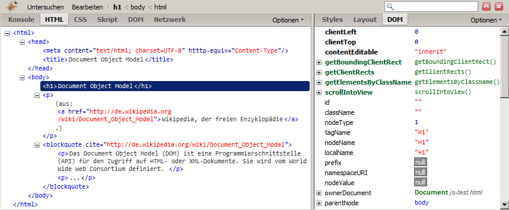
In der rechten Spalte finden Sie die drei Tabs Styles, Layout und DOM. Die ersten beiden sind in erster Linie bei der CSS-Entwicklung interessant, der dritte Tab insbesondere beim Schreiben von JavaScript. Darin sind alle Eigenschaften und Methoden des ausgewählten Elementobjekten aufgelistet. Viele dieser Eigenschaftswerte (z.B. parentNode) sind anklickbar und führen zur Ansicht des entsprechenden Knoten bzw. JavaScript-Objekts.
Um ein Element schnell zu finden, können Sie oben links in der Firebug-Leiste auf Untersuchen klicken. Nun können Sie im Dokument ein Element auswählen. Wenn Sie mit dem Mauszeiger durch das Dokument gehen, wird das Element, auf deren Fläche sich der Mauszeiger befindet, mit einem blauen Rahmen hervorgehoben. Außerdem wird das Element automatisch im DOM-Inspektor fokussiert. Klicken Sie ein Element an, um den Auswahl-Modus zu verlassen. Alternativ zu dieser Vorgehensweise über die Schaltfläche Untersuchen können Sie ein Element mit der rechten Maustaste anklicken und im Kontextmenü Element untersuchen wählen. Dies hat denselben Effekt.
Der Internet Explorer verfügt über keinen eingebauten DOM-Inspektor, es existiert allerdings ein offizieller Zusatz, den Sie installieren sollten: Die Internet Explorer Developer Toolbar. Diese wurde der besagten Ansicht von Firebug nachempfunden.
Nachdem Sie den Zusatz installiert haben, können Sie die Toolbar aktivieren, indem Sie im Menü Ansicht → Explorer-Leiste → IE Developer Toolbar aktivieren. Gegebenenfalls ist das Menü im Internet Explorer 7 standardmäßig ausgeblendet - Sie können es kurzzeitig einblenden, indem Sie die Alt-Taste drücken. Die Toolbar erscheint am unteren Fensterrand und Sie können deren Höhe variieren.
Das Beispieldokument wird in der IE Developer Toolbar folgendermaßen veranschaulicht:
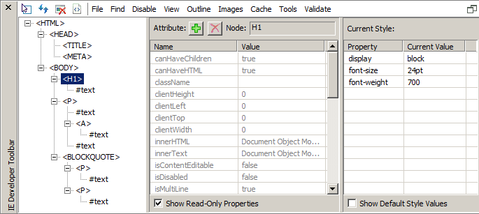
Die mittlere Spalte zeigt die Eigenschaften des ausgewählten Elementobjektes an (hier wieder die h1-Überschrift).
...
...
Mithilfe von Kontrollausgaben können Sie den Ablauf eines Scriptes nachvollziehen und Variablen ausgeben, um deren Werte zu prüfen. Eine vielseitigeres und mächtigeres Werkzeug sind Debugger. Damit können Sie komfortabler die Funktionsweise eines Scriptes untersuchen, denn Sie müssen nicht nach jeder Anweisung eine Kontrollausgabe einfügen. Ein JavaScript-Debugger bietet im Allgemeinen folgende Möglichkeiten:
Sie können im Code sogenannte Haltepunkte (englisch Breakpoints) setzen. Die Ausführung des JavaScripts wird an dieser Stelle unterbrochen und der Browser öffnet den Debugger. Ausgehend von dieser Code-Zeile können Sie die folgenden Anweisungen nun Schritt für Schritt ausführen, Anweisungen überspringen und aus aufgerufenen Funktionen herausspringen. Bei dieser schrittweisen Ausführung können Sie überprüfen, welche Werte bestimmte Objekte und Variablen an dieser Stelle im Script haben. Eine Weiterentwicklung dieser Überwachung von Variablenwerten stellen sogenannte Watch-Expressions (englisch für Überwachungs-Ausdrücke) dar.
...
Wenn Sie viele Funktionen definieren, die sich gegenseitig aufrufen, hilft Ihnen ein Debugger, die Übersicht über das Aufrufen und Abarbeiten von Funktionen zu behalten. In der Einzelschritt-Ausführung haben Sie den sogenannten Call Stack (englisch für Aufruf-Stapel) im Blick. Das ist die Verschachtelung der Funktionen, die gerade abgearbeitet werden. Wenn beispeilsweise die Funktion a die Funktion b aufruft und diese wiederum die Funktion c, so ist der Stapel a > b > c. Die Funktion c, die gerade ausgeführt wird, liegt sozusagen oben auf dem Stapel. Nach dessen Ausführung wird c vom Stapel genommen und in die Funktion b zurückgekehrt - und so weiter.
...
Firebug, Opera Dragonfly, Microsoft Visual Web Developer Express, IE 8
Aptana Studio
...